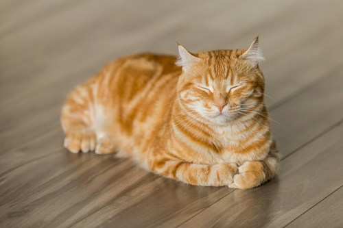

Cats are better than dogs because they don't take up space in the house and they are less expensive. Cats are a perfect pet to keep because the benifits that they give are very helpful like keeping pests away. But they can also clean themselves so their odor is not overwhelming and nasty. If I would had to chose a pet I would chose cats.
